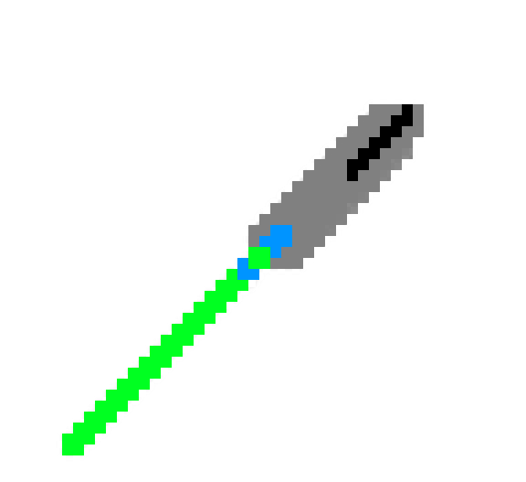
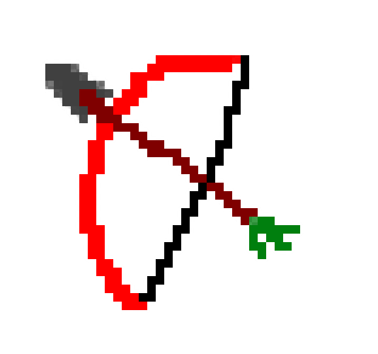
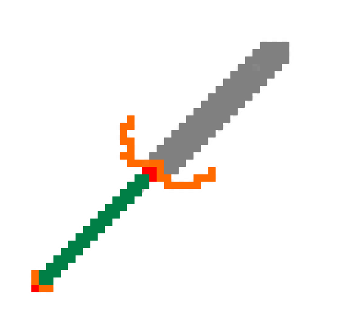
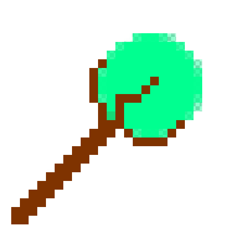

Al empezar un mapa y al subir de nivel se nos mostrarán tres habilidades diferentes para ayudarnos a completar el mapa. Existen varias habilidades dependiendo del arma que tengamos equipada.

Lanza
Doble golpe: cada 5 segundos el personaje da un golpe extra al mismo tiempo
Distanciamiento: los enemigos no podrán golpearnos a melé de frente a una distancia igual a la lanza
Embestida: puedes embestir a los enemigos en línea recta cada 10 s sin sufrir daño
Jabalina: puedes lanzar la lanza en línea recta, si aciertas a más de un enemigo la probabilidad de crítico se duplica
Barrido: puedes barrer con tu lanza en un área en forma de cono ralentizando y dañando a varios enemigos cada 5 segundos.

Arco
Flecha de goma: las flechas pueden rebotar en los obstáculos y dañar a los enemigos
Multidisparo: disparas dos flechas en vez de una
Flecha trasera: disparas una segunda flecha hacia atrás
Flechas locas: disparas tres flechas en forma de cono
Rebote: las flechas rebotan en los enemigos

Espada
Peonza: cada 5 segundos puedes empezar a girar con la espada para causar daño a los enemigos a tu alrededor
Aplasta-yelmos: cada 3 ataques el tercero será crítico
Honor de caballero: cada 10 segundos obtienes un escudo que protege el 20% de la vida máxima
Espada sangrienta: cada enemigo que mates te curará un porcentaje según la vida máxima del monstruo
Infantería: reduce el daño de ataques a melé

Báculo
Guadaña: probabilidad de matar instantáneamente a un monstruo
Extinción: caen meteoritos sobre enemigos al azar. Daño en área
Recolector de almas: probabilidad de convertir a monstruos derrotados en zombies aliados
Invocar familiar: cada cierto tiempo aparece un familiar que dispara a los enemigos (Aparecen un máximo de 7 familiares a la vez)
Señor de la noche: cuando infliges daño a un enemigo recibe una explosión de oscuridad que inflige daño en área
General
Prender: los ataques queman a los enemigos que reciben daño durante un periodo de tiempo
Congelar: los ataques ralentizan a los enemigos
Corriente: los ataques producen descargas eléctricas que se propagan entre los enemigos
Círculo de fuego: dos bolas de fuego que queman a los enemigos que las tocan
Círculo de hielo: dos bolas de hielo que ralentizan a los enemigos que las tocan
Círculo de rayo: dos bolas de electricidad que electrocutan a los enemigos que las tocan
Círculo de escudos: dos escudos que protegen de proyectiles